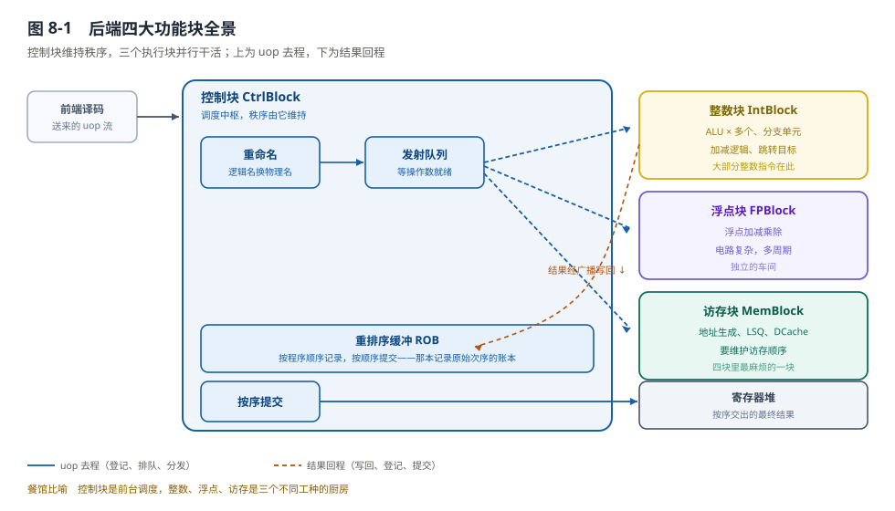
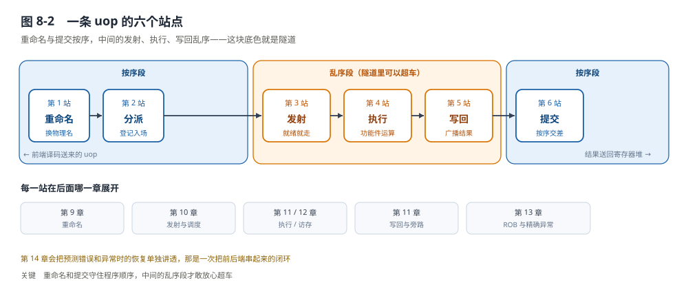
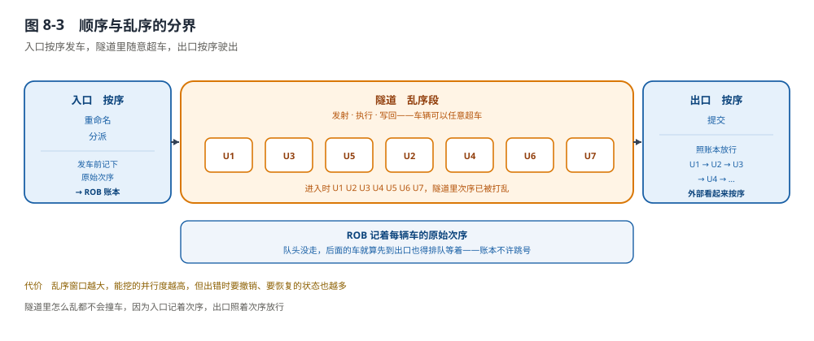
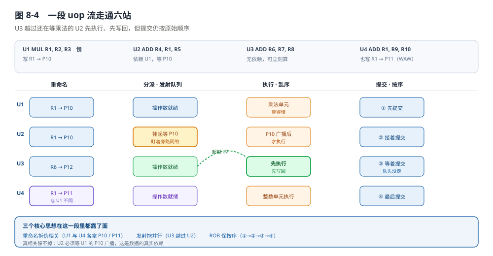

第 8 章 后端全景与指令生命周期
前端忙了四章，终于把指令变成了规整的 uop 流，交到后端手上。从这一章起，我们进入处理器真正”动脑子的地方”。
后端要做的事，说起来只有一句：在不违反程序语义的前提下，尽量让多条 uop 同时干活。可这一句话里藏着两个方向相反的要求。一方面要”乱序执行”，把能并行的指令都挖出来，让执行单元别闲着；另一方面要”按序完成”，让程序员看到的还是一条接一条的顺序结果，异常和分支错了还能干净地退回去。这两个要求拉扯在一起，就长出了后端那一堆看起来复杂的模块。
这一章不钻任何模块的细节，只做一件事——画一张地图。先看清后端分成几大块，再跟着一条 uop 走完它从进入到提交的全部站点，最后标出顺序与乱序的分界在哪。后面的第 9 到第 14 章，会逐个把地图上的站点展开。手里有这张图，读到那些章节时就不会迷路。
8.1 后端接手之后
前端送来的 uop 流有几个特点：格式统一、字段规整、每条 uop 该干什么已经写清楚了。译码器已经把复杂的 ISA 指令拆解或合并成了后端喜欢的样子（第 7 章）。后端要做的，是给这些 uop 安排执行。
如果照搬五级流水线那套”一条接一条”的做法，后面的日子会很轻松，但性能也就止步于此了。前端每周期能送来两三条 uop，执行单元也有好几个，凭什么要一条一条排队？乱序处理器的回答是：谁能先算就先算，算完先放一边，最后再按原来的顺序交差。
于是后端天然分成两段。前一段负责把 uop 打散、并行执行，叫乱序段；后一段负责把结果收拢、按顺序交出去，叫按序段。两段中间靠几个队列衔接。理解后端，其实就是理解这三件事：
- 怎么打散（重命名、分派、发射）
- 怎么并行（多个执行单元、乱序写回）
- 怎么收拢（按序提交、出错回滚）
本章先把这条完整路线走一遍，每个站点只讲”它是干什么的、为什么需要它”。至于每个站点内部长什么样，留给后面的章节。
8.2 后端分成四块
真实的乱序后端模块很多，为了不迷路，需要一种分组方式。常见的做法是按功能划成四块。这里的”块”是一个设计上的分组概念，不是某块具体的芯片电路——不同处理器的划分方式不完全一样，但思想相通。
控制块是调度的中枢，也是后端里唯一”思想多于运算”的一块。它管着重命名、分派、发射队列、重排序缓冲和提交。uop 从前端进来，先在这里登记、改名、排队；执行完的结果回来，还是在这里收拢、按序交差。可以说，乱序执行的”秩序”是控制块维持的。
整数块是处理整数运算的车间，里面通常有好几个算术逻辑单元，能算加减、逻辑、移位，也能算分支跳转的目标。我们熟悉的整数程序，大部分指令都在这里完成。
浮点块负责浮点数运算。浮点加减乘除的电路比整数复杂得多，往往要流水化、要多个周期，所以它单独成块，和整数块并行干活。本书不展开浮点细节，但只要知道”它是另一个独立的车间”就够了。
访存块管所有读写内存的指令。它要算地址、要访问数据缓存、还要维护访存之间的顺序，是四块里最麻烦的一块（第 12 章专门讲）。
用一家餐馆来比喻：控制块是前台调度，接单、叫号、上菜顺序都归它管；整数块、浮点块、访存块是三个不同工种的厨房，各做各的菜。前台不炒菜，但没它整个餐馆就乱了套。这个比喻不用记太死，它想说明的是——控制块负责秩序，其余三块负责干活。
8.3 一条 uop 走过的六个站
把后端放大来看，一条 uop 从进入到离开，会依次经过六个站点。这六个站点的名字，后面每一章都会反复出现，值得现在就认个脸熟。
第一站，重命名。 uop 里的源寄存器和目的寄存器还是 ISA 里的逻辑名字（比如 R1、R2）。重命名把它们换成物理寄存器的编号。为什么要换？第 2 章讲过，WAR 和 WAW 这些伪相关只是”名字撞车”，换个名字就消失了。重命名就是干这个的，顺便也让同名的多条指令能各用各的地方存结果。详见第 9 章。
第二站，分派。 改好名的 uop 被分别送进两个地方：需要等操作数的进发射队列，需要按序提交的进重排序缓冲（ROB）。可以把它想成”登记入场”——该排队的排队，该挂号的挂号。
第三站，发射。 发射队列里的 uop 盯着旁路网络，一旦自己需要的操作数都到齐了，就被选中送往执行单元。这一步是乱序的起点：后面的一条指令，只要操作数先就绪，就可以越过前面还在等的指令先走。第 3 章讲的保留站和广播，本质上就是这一站；第 10 章会把它讲透。
第四站，执行。 uop 在对应的功能部件里真正运算。整数、浮点、访存各回各的车间。不同指令耗时不同——加法一拍，乘法好几拍，访存更没准。第 11、12 章讲这一站。
第五站，写回。 算完的结果被放到公共数据总线上广播出去，一方面唤醒还在等它的指令，一方面写进物理寄存器。这一站还是乱序的，谁先算完谁先写。第 3 章的 CDB 广播就是它。
第六站，提交。 结果不能就这么交给程序员——得按顺序来。ROB 按程序顺序记录着每条 uop，只有队头的 uop 完成了，才允许把它的结果”生效”。如果队头发生异常，后面的结果哪怕早已算出，也要跟着一起撤销。这一步让乱序执行”看起来是顺序的”，第 13 章讲。
六个站连起来，就是一条 uop 的完整一生。下面用两张图把它画出来。
8.4 后端全景图
先看后端全景。图 8-1 把四大功能块和 uop 的流动画在了一起。

图 8-1 后端按功能分成控制、整数、浮点、访存四块。控制块掌管重命名、发射队列、ROB 和提交，其余三块是并行的执行车间。
读这张图的关键是抓住两条线。上面那条是 uop 的”去程”：从前端进来，经重命名、分派，进入发射队列，再被送到各个执行车间。下面那条是结果的”回程”：算完的结果经广播写回，同时在 ROB 里登记，最后按顺序提交，把结果送回寄存器堆。两条线一去一回，构成一个环。

图 8-2 一条 uop 从进入到提交依次经过的六个站点。重命名、分派、提交是按序的，发射、执行、写回是乱序的。
图 8-2 把六站排成一条线，并把按序段和乱序段用底色区分开。这张图是本章的核心，后面每讲一个模块，都可以回头想想”它在第几站”。
8.5 顺序与乱序的分界
六站里，哪几站按顺序、哪几站乱序，是理解后端最容易糊涂的地方。图 8-3 专门标出了这条界线。

图 8-3 重命名、分派、提交按程序顺序进行，中间的发射、执行、写回可以乱序。前后两个按序点像隧道的两端，uop 在隧道里可以任意超车。
为什么这样安排？
重命名和分派必须按序。重命名要按程序顺序分配物理寄存器、记录依赖关系，顺序一乱，谁是最新值就说不清了。分派要按序进 ROB——ROB 里的次序就是程序次序，提交时照着它来，才不会交错。
提交必须按序。这是乱序处理器”看起来顺序”的保证。程序员和操作系统都假设指令是一条接一条完成的，异常也要求精确到某一条指令。只有按序提交，才能让外部看到的世界保持这个假象。
中间的发射、执行、写回则可以乱序。这正是性能的来源：不必等前面那条慢指令算完，后面就绪的指令可以先走。乱序的幅度越大，能挖出的并行度越高，但需要的恢复机制也越复杂——这个权衡后面会反复遇到。
打个比方：六站像一条隧道。入口（重命名、分派）按序发车，隧道里（发射、执行、写回）车辆可以随意超车，出口（提交）又按顺序驶出。隧道里怎么乱都不会撞车，因为入口记着每辆车的原始次序，出口照着这个次序放行。ROB 就是那本记录原始次序的账本。
8.6 走通一段 uop 流
光看抽象的分界还不够，用一段具体的 uop 走一遍。还是用全书那条熟悉的例子——第 1 章和第 3 章都出现过的 I1 到 I4。为了聚焦后端，假设它们已经译码成了 uop，跳过前端的部分。
U1 MUL R1, R2, R3 # R1 = R2 * R3，乘法，慢
U2 ADD R4, R1, R5 # 依赖 U1 的结果，真相关
U3 ADD R6, R7, R8 # 与其他 uop 无关，可以立刻算
U4 ADD R1, R9, R10 # 也写 R1，与 U1 是 WAW图 8-4 展示了这四条 uop 在六站之间的流动。

图 8-4 U3 不依赖任何人，越过还在等乘法的 U2 先执行、先写回，但提交时仍按 U1 到 U4 的原始顺序。
跟着图走一遍，几个关键点就清楚了。
重命名为 U1 和 U4 各分配不同的物理寄存器。 U1 写 R1 拿到 P10，U4 写 R1 拿到 P11。两条指令都写”R1”，但各写各的物理位置，WAW 就这么化解了。重命名表记着”R1 现在对应 P11”，所以后续读 R1 会拿到最新那条的结果。
U2 在发射队列里等 U1。 它的源操作数 R1 被重命名成 P10，而 P10 还没算出来。U2 就挂在发射队列里，盯着旁路网络等 P10 广播。这是真相关，躲不掉，只能等。
U3 越过去了。 U3 的操作数 R7、R8 一开始就就绪，它在发射队列里被优先选中，送进整数单元算完、写回。它后面没有任何依赖它的 uop，所以写回之后就安静地在 ROB 里排队等提交。这就是乱序带来的好处——不让一条慢乘法把整条队伍堵死。
提交按顺序。 假设 U3 早就算完了，但 U1 的乘法还在算。提交指针卡在队头 U1 上，U3 就算完成也得等着。等 U1 算完写回，U1 先提交，接着 U2（它等 U1 的结果，U1 一回来它就能算），再 U3、U4。外部看到的结果，仍然是 U1、U2、U3、U4 的原始顺序。
这一段把后端的核心思想演全了：重命名拆伪相关，发射挖并行，ROB 保按序。第 9 到第 13 章，就是把这里的每一步拆开细讲。
8.7 几个关键权衡
后端的设计处处是取舍，这里先点几个，后面各章会展开。
分块还是集中。 把执行单元分成整数、浮点、访存几块，好处是各块可以独立优化、并行工作；代价是块之间要传递结果，旁路网络变复杂。小核可能不分这么细，大核才需要明确的块划分。
乱序幅度与恢复成本。 让 uop 在隧道里跑得越远（乱序窗口越大），能挖的并行度越高，但一旦分支预测错了或发生异常，要撤销、要恢复的状态也越多。性能与复杂度是一对矛盾。
各段宽度要匹配。 前端供给多宽、重命名和分派多宽、发射多宽、提交多宽，这些数字要互相匹配。任何一段成为窄口，其他地方再宽也没用——熟悉的木桶效应。第 4 章讲前端时提过一次，后端这边同样成立。
队列深度不是越大越好。 发射队列、ROB 都能吸收波动、提供乱序空间，但队列越大，查找和选择的电路越慢、越费面积。真实的处理器要在”够用”和”划算”之间找平衡点。
8.8 图形与实验
这一章是地图章，没有 Verilog 代码。原因很简单：后端全景讲的是模块之间的关系和 uop 的流动，用代码表达反而见木不见林。这一章的任务是把全局看清楚，代码留到各站展开时再写。
配套的图形分两类。全景和数据流用 SVG：图 8-1 是四大功能块全景，图 8-2 是六站生命周期，图 8-3 标出顺序与乱序的分界，图 8-4 走通一段具体 uop 流。这几张都是矢量图，可以直接用浏览器打开，也能用 Inkscape、Illustrator 或 VS Code 修改。
局部机制用 Digital。本章配了一个可以在 Digital 里打开的小电路 code/digital/08_uop_dispatch.dig，它演示分发这一步最底层的事情：一条 uop 带着两位的类型标记 type1 type0 进来，电路把它译成四路信号，命中哪一路就点亮哪一路。编码对应关系是 00 送控制块内部、01 送整数块、10 送浮点块、11 送访存块——任何时刻只有一盏亮。电路内部就是两个反相器加四个与门，每个与门认一种组合，这叫 2-4 译码器。拨动两个输入开关，对照它自带的真值表，看四路输出哪盏亮，就能明白”uop 按类型分发到不同功能块”在连线上是什么样子。Digital 适合表达这种落到门电路上的局部逻辑，全景则交给 SVG。
读图的时候有个建议：先盯着图 8-2 看两分钟，把六个站点的名字和顺序记住。后面每进一章，就想想”这一章讲的是第几站、它在全图的哪个位置”。这样一路读下来，脑子里始终有一张完整的后端地图。
8.9 香山一瞥（选读）
香山的后端明确分成几个大块，本书沿用的”四块划分”正是从它那里借来的思路。它的控制块（CtrlBlock）里放着重命名、发射队列、ROB 和提交这些调度部件；整数、浮点、访存各自成块，并行执行。
这个划分的工程动机是：不同种类的运算，电路特性差别很大。整数加法快、浮点乘法慢、访存还要和缓存打交道，把它们混在一个块里，谁都没法针对自己的特点优化。分开之后，每块可以按其节奏工作，块与块之间通过明确定义的接口传递 uop 和结果。
这里只要记住思想就够了——按功能分块，让每块各司其职。至于香山具体分了几块、每块多少项、接口怎么定义，都是工程细节，跳过不影响本书主线。有兴趣的读者可以顺着”CtrlBlock”“IntBlock”“MemBlock”这些名字去读它的文档。
8.10 小结
这一章画了一张后端地图，没有涉及任何模块的细节。
后端按功能分成四块：控制块掌管秩序，整数、浮点、访存三块负责执行。一条 uop 从进入到提交经过六个站点：重命名、分派、发射、执行、写回、提交。前三站里的重命名和分派按序，中间三站乱序，最后的提交又回到按序。前后两个按序点像隧道两端，uop 在隧道里可以超车，但出口照着入口记下的次序放行，而 ROB 就是那本记录次序的账本。
一段 uop 走下来，三个核心思想都露了面：重命名拆掉伪相关，发射把就绪的指令挖出来并行执行，ROB 保证最后按顺序交差。第 9 章到第 14 章会逐个把这张地图上的站点展开，把这里点到为止的每一站讲透。
一句话记住本章：后端让指令在隧道里尽情超车，却承诺在出口把它们按原次序一一交还。
8.11 思考题
- 后端既要”乱序执行”又要”按序完成”，这两个要求为什么缺一不可？如果只保留其中一个，分别会出现什么问题？
- 六大站点里，为什么重命名和分派必须按序，而发射、执行、写回可以乱序？如果让重命名也乱序，会出什么乱子？
- 控制块被比喻成”前台调度”，它自己几乎不做运算。为什么一个不做运算的块，对乱序处理器反而不可或缺？
- 在 8.6 节的例子里，U3 明明早就算完了，却要等 U1 提交。既然结果都对了，为什么不能直接提交 U3？这背后保护的是谁的假设？
- 后端各段的宽度（前端供给、重命名、发射、提交）为什么要匹配？如果提交宽度只有发射宽度的一半，会发生什么？